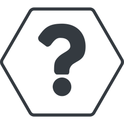

LIVE FROM THE CANADIAN FRONTIER OF SUPERSONIC SOUND
LIVE NICHE.
This universe is too vast to take the road most travelled. Live from the heartland: a curation five seasons in the making.
LISTEN NOWBROADCAST IS TOTALLY REALLY LIVE

NOW PLAYING:
Transmission offline.
If you're seeing this...
Can I please have, like- $20?
WHAT IS NICHE RADIO?
Niche Radio is an independent broadcasting platform dedicated to music, creativity, and alternative culture. Built from a mind who thought there was more to the SOLspace than the norm, this project has expanded to reach the waves and directly into your sound systems. Enjoy the ride; we control transmission now.
- Our Most Merciful God-King of Nichetaria: Motis
- Webmaster: MrMonolith